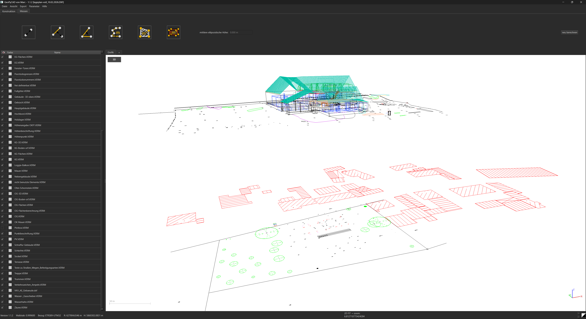
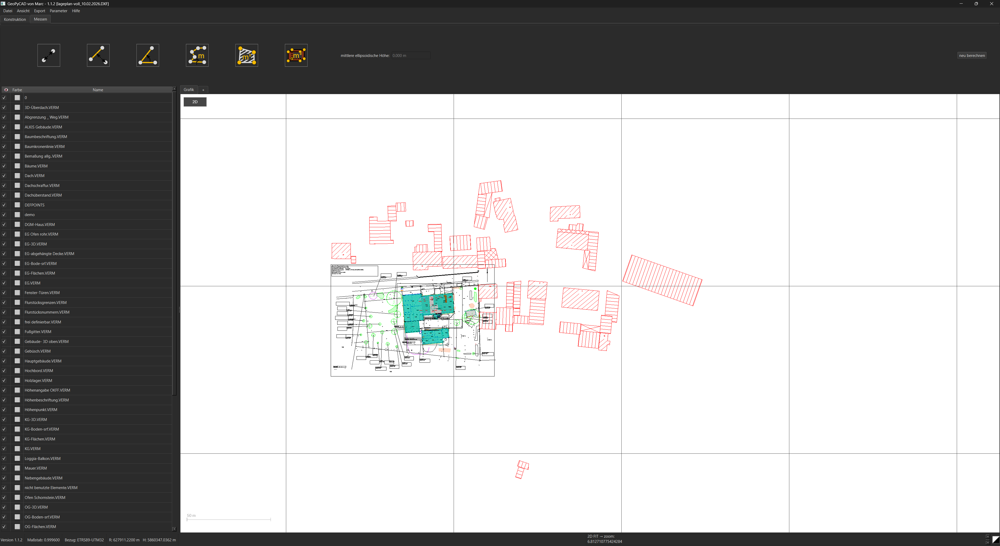
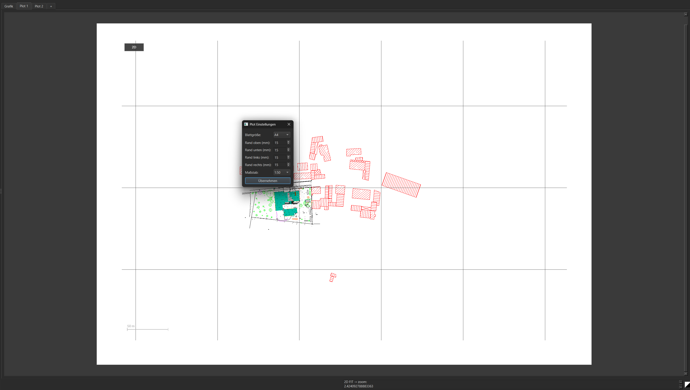

3D-Grafikansicht
Visualisiere technische Zeichnungen und räumliche Modelle direkt in der 3D-Grafikansicht.
Ein CAD-Projekt aus der Vermessungspraxis
GeoPyCAD ist ein eigenständiges CAD-Projekt mit Fokus auf technische Zeichnungen, Vermessungsdaten und praxisnahe Arbeitsabläufe.
01DAS PROGRAMM
Ein CAD-Werkzeug in Entwicklung – mit einer Architektur, die auf nachvollziehbare Daten, klare Darstellung und schrittweise Erweiterbarkeit ausgelegt ist.

Visualisiere technische Zeichnungen und räumliche Modelle direkt in der 3D-Grafikansicht.

Orthogonale Draufsicht für die übersichtliche Darstellung und Bearbeitung technischer Zeichnungen.

Bereite Zeichnungen für maßstäbliche Pläne und die spätere Ausgabe vor.
Berechnungsparameter können manuell angepasst werden
Eine klare Ansicht für Zeichenobjekte, Layer und die laufende Bearbeitung.
Die Plotansicht ist auf die Vorbereitung maßstäblicher Ausgaben ausgerichtet.
Die 3D-Ansicht zeigt GeoPyCAD. Weitere Darstellungen auf dieser Seite sind grafische Illustrationen, keine zusätzlichen Programm-Screenshots.
02DER ANSATZ
GeoPyCAD wächst schrittweise. Der Anspruch: technische Funktionen verständlich bündeln und die Grundlage für einen verlässlichen CAD-Workflow schaffen.
03FACHLICHER HINTERGRUND
Hinter GeoPyCAD steht ein mehrjähriger beruflicher Hintergrund in der Vermessungstechnik. Ich programmiere GeoPyCAD, weil ich anfänglich zuhause auch ein praktisches CAD nutzen wollte, das einen nicht einschränkt. Was als DXF-Viewer im Januar 2026 anfing, ist nun ein nahezu vollwertiges CAD für das Konstruieren und Auswerten von 2D & 3D Daten.
„Software ist dann hilfreich, wenn sie technische Arbeit verständlicher und verlässlicher macht.“
DER GEDANKE HINTER GEOPYCAD
04ÜBER DAS PROJEKT
GeoPyCAD wird iterativ entwickelt. Neue Funktionen, Verbesserungen an der Darstellung und eine zugängliche Benutzeroberfläche entstehen Schritt für Schritt. Diese Website dokumentiert die Idee und den Weg des Projekts.
Klare Strukturen und ein bewusster Umgang mit technischen Daten.
Ein modularer Ansatz, der Raum für weitere Funktionen lässt.
Entwicklungsentscheidungen orientieren sich an realen technischen Aufgaben.